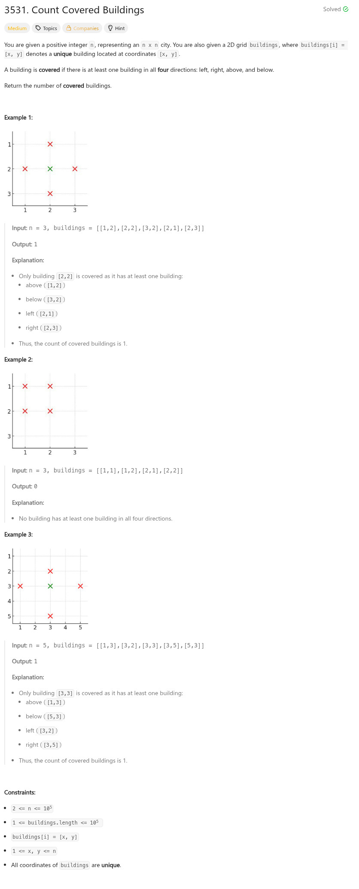

參考資訊：
https://progiez.com/3531-count-covered-buildings-leetcode-solution
題目：

int countCoveredBuildings(int n, int** buildings, int buildingsSize, int* buildingsColSize)
{
#define MAX_SIZE 100000
const int W = 0;
const int E = 1;
const int S = 2;
const int N = 3;
int i = 0;
int r = 0;
int p[MAX_SIZE][4] = { 0 };
for (i = 0; i < MAX_SIZE; i++) {
p[i][W] = INT_MAX;
p[i][S] = INT_MAX;
p[i][E] = -INT_MAX;
p[i][N] = -INT_MAX;
}
for (i = 0; i < buildingsSize; i++) {
int x = buildings[i][0];
int y = buildings[i][1];
if (p[y][W] > x) {
p[y][W] = x;
}
if (p[y][E] < x) {
p[y][E] = x;
}
if (p[x][S] > y) {
p[x][S] = y;
}
if (p[x][N] < y) {
p[x][N] = y;
}
}
for (i = 0; i < buildingsSize; i++) {
int x = buildings[i][0];
int y = buildings[i][1];
if ((p[y][W] < x) &&
(p[y][E] > x) &&
(p[x][S] < y) &&
(p[x][N] > y))
{
r += 1;
}
}
return r;
}